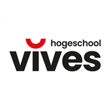

De opleiding tot bachelor maakt deel uit van het Hoger Onderwijs. Het gaat hier om Hoger Onderwijs van 1 cyclus (3 jaar). Op de site van de vzw-Bachelor.be vind je meer info over de positie van de bacheloropleiding binnen de nieuwe bachelor/master-structuur.